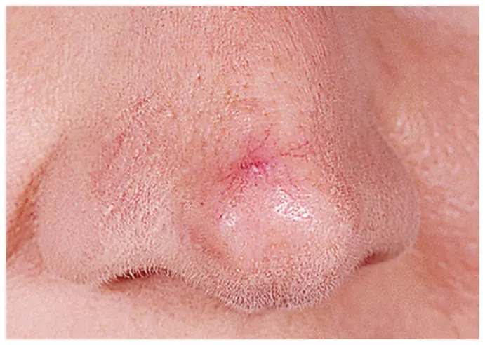

نسخه استخراجشده؛ ترجمه یا تأیید علمی انجام نشده است. وضعیت: captured
مرد ۵۸ سالهای برای کشیدن چند ریشه آمده. سفیدی چشمش کمی زرد است، شکمش برآمده، هر دو پاروتیدش بیدرد بزرگ شده و لثهاش با کمترین لمس خون میآید. به چه فکر میکنی؟

آسیب الکل به کبد سه مرحله دارد: کبد چرب که برگشتپذیر است، هپاتیت الکلی که بیشترش برگشتپذیر است، و سیروز که فیبروز برگشتناپذیر است. فقط ۱۰ تا ۱۵٪ مصرفکنندگان سنگین الکل به سیروز میرسند.
سیروز علتهای دیگری هم دارد: هپاتیت B و C مزمن و کبد چرب غیرالکلی (NAFLD) در چاقی و دیابت. سیروز مهمترین زمینهی سرطان کبد است.
دهان بیمار الکلی: بهداشت بد، پوسیدگی، پریودنتیت، گلوسیت، کیلیت زاویهای، کاندیدیازیس و خشکی دهان. الکل و دخانیات خطر SCC دهان را بالا میبرند؛ کنار زبان و کف دهان را دقیق ببین.
شدت سیروز را با Child-Pugh میسنجند: آسیت، آنسفالوپاتی، بیلیروبین، آلبومین و INR. در Child B یا C دربارهی آنتیبیوتیک و هموستاز با پزشک هماهنگ کن.
در آزمایش، نسبت AST به ALT دو یا بیشتر، همراه GGT و MCV بالا، به بیماری الکلی کبد اشاره دارد.
نوع سؤال: ساخت کلمه · 7 خانه
حروف منبع: پ · ت · ا · ی · و · د · ر